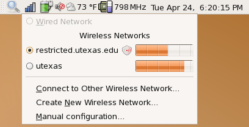
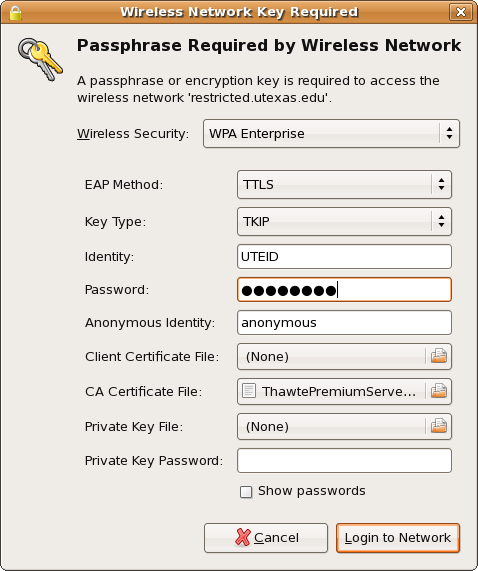

This document describes what I did to access the "restricted.utexas.edu" wireless network at UT. Your mileage may vary. UT ITS provides instructions for connecting to the wireless network using Linux. This page is applicable to Ubuntu Feisty Fawn 7.04.
Ubuntu comes with Gnome's NetworkManager which makes connecting to wireless networks a lot easier than it was in the past. NetworkManager (present as a small icon on the top right corner of the screen) shows a list of wireless networks. Choose "restricted.utexas.edu". 
Choosing this network pops up a window asking for some login information. Enter details as shown in the figure below. The only field that deserves mention is "CA Certificate File". This file is the text file obtained by following steps 1-5 of the instructions provided by UT ITS. You can also download it here. I am not a lawyer, but to the best of my knowledge and understanding, the Thawte Root Certificate License Agreement does not prevent me from making this certificate file available here. You should follow the instructions provided by ITS to make sure you got the right certificate file. 
At this point, you should be able to connect to the restricted.utexas.edu wireless network. I hope these instructions were useful.
Last modified: Tue Apr 24 19:00:54 CDT 2007